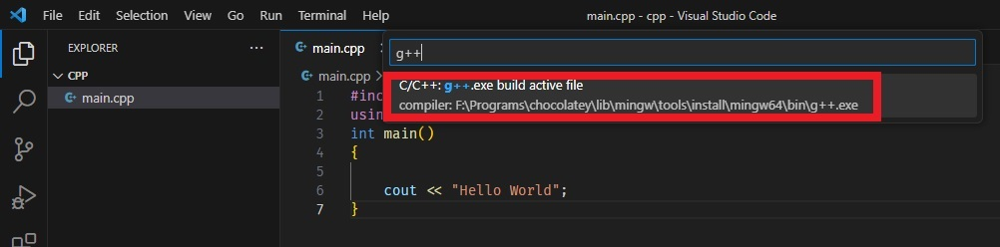

Setup of gcc compiler
C++ project using gcc
- Create a folder called HelloWorld
-
Add main.cpp.
#include <iostream> #include "head.h" int main() { User abhay("Abhay", 7); abhay.info(); } -
Add head.h.
#ifndef head_h #define head_h #include <iostream> class User { public: User(std::string nm, int ag); void info(); int age; std::string name; }; #endif -
Add source.cpp.
#include <iostream> #include "head.h" User::User(std::string nm, int ag) { name = nm; age = ag; }; void User::info() { std::cout << " name = " << name << "\n age = " << age << std::endl; } -
Add .gitignore.
# Prerequisites *.d # Compiled Object files *.slo *.lo *.o *.obj # Precompiled Headers *.gch *.pch # Compiled Dynamic libraries *.so *.dylib *.dll # Fortran module files *.mod *.smod # Compiled Static libraries *.lai *.la *.a *.lib # Executables *.exe *.out *.app - To create a tasks.json file, click Terminal Configure default build task
-
Select C/C++: g++.exe build active file

-
This will create .vscode folder which contain tasks.json. Change the contents of tasks.json
{ "version": "2.0.0", "tasks": [ { "type": "cppbuild", "label": "C/C++: g++.exe build active file", "command": "F:\\Programs\\chocolatey\\lib\\mingw\\tools\\install\\mingw64\\bin\\g++.exe", "args": ["-fdiagnostics-color=always", "-g", "${workspaceFolder}\\*.cpp", "-o", "${fileDirname}\\${fileBasenameNoExtension}.exe"], "options": { "cwd": "${fileDirname}" }, "problemMatcher": ["$gcc"], "group": { "kind": "build", "isDefault": true }, "detail": "compiler: F:\\Programs\\chocolatey\\lib\\mingw\\tools\\install\\mingw64\\bin\\g++.exe" }, { "type": "shell", "label": "Run Project", "command": "F:\\Programs\\chocolatey\\lib\\mingw\\tools\\install\\mingw64\\bin\\g++.exe -fdiagnostics-color=always -g \"${workspaceFolder}\\*.cpp\" -o \"${fileDirname}\\${fileBasenameNoExtension}.exe\" && \"${fileDirname}\\${fileBasenameNoExtension}.exe\"", "options": { "cwd": "${fileDirname}" }, "problemMatcher": ["$gcc"], "detail": "compiler: F:\\Programs\\chocolatey\\lib\\mingw\\tools\\install\\mingw64\\bin\\g++.exe" } ] }Here we have added custom task Run Project which will first build the project and run the generated exe file.
- To run the custom task, click Terminal Run task. Select Run Project from dropdown.